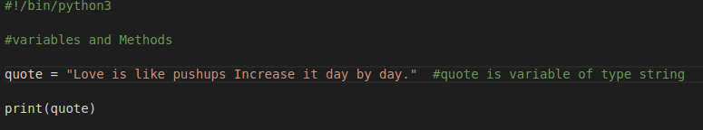

Variable:
Variable is a named memory location used to hold a value
In python we don't need to specify the datatype of variable at the time of declayring.
According to the value given it takes the datatype


SomeMethods
(They are basically function to work on an object)


Some More Methods


Working with variable